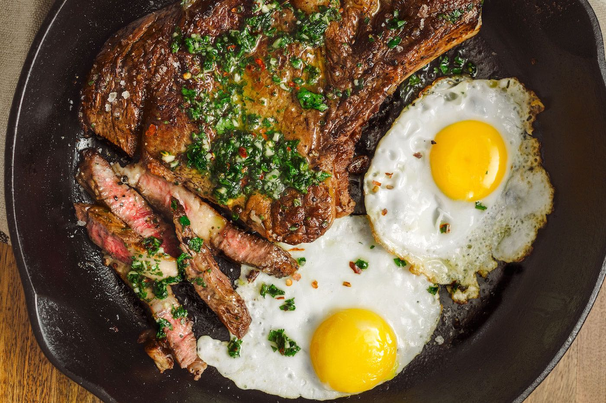
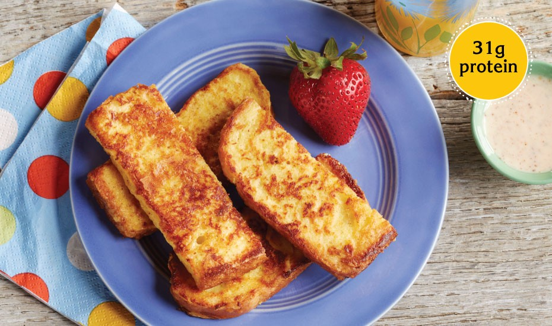

Recipes for brunch
1. Best-Ever Steak & Eggs

Ingredients
- 1 1"-thick New York strip steak (about 13 oz.)
- 2 tbsp. vegetable oil, divided
- 1 tsp. Kosher salt, plus more for seasoning to taste
- 1 tsp. Freshly ground black pepper, plus more for seasoning to taste
- 3/4 tsp. smoked paprika, plus more for seasoning to taste
- 2 tbsp. butter
- 4 eggs
Directions
- Remove steak from refrigerator and let come to room temperature, 30 minutes.
- Rub steak with 1 tablespoon vegetable oil and season all over with 1 ½ teaspoon salt, 1 teaspoon pepper, and ¾ teaspoon paprika.
- Reduce heat to medium-low and add butter to pan.
Using a kitchen towel, carefully grip the skillet handle and tilt towards you so that the melting butter forms a pool at the bottom of the skillet.
Using a spoon, continually baste butter onto steak to form a deeper golden crust.
Flip steak and repeat, 2 to 3 minutes in total. Using a meat thermometer, check for doneness: 120-125°F for medium rare, 130°F for medium.
- Transfer steak onto a cutting board and let rest about 10 minutes.
- Meanwhile, heat remaining oil in a nonstick skillet over medium heat until shimmering.
Crack egg into pan and cook 3 to 4 minutes, or until white is set and edges are just beginning to brown.
Remove from pan and season with salt and pepper.
- Slice steak into 1" strips on a bias, against the grain.
- Serve steak with eggs and potatoes.
Garnish with herbs and season with more salt, pepper, and paprika to taste.
2. Basic French Omelet

Ingredients
- 2 large EGGS
- 2 Tbsp. water
- 1/8 tsp. salt
- Dash pepper
- 1 tsp. butter
- 1/3 cup filling, such as shredded cheese, finely chopped ham
Directions
- Beat eggs, water, salt and pepper in small bowl until blended.
- Heat butter in 6 to 8-inch nonstick omelet pan or skillet over medium-high heat until hot.
Tilt pan to coat bottom. POUR egg mixture into pan.
Mixture should set immediately at edges.
- Gently Push cooked portions from edges toward the center with inverted turner so that uncooked eggs can reach the hot pan surface.
Continue cooking, tilting pan and gently moving cooked portions as needed.
- When top surface of eggs is thickened and no visible liquid egg remains, PLACE filling on one side of the omelet.
Fold omelet in half with turner. With a quick flip of the wrist, Turn pan and Invert or Slide omelet onto plate.
Serve immediately.
3. Cinnamon French Toast Sticks

Ingredients
- 4 large EGGS
- 1/2 cup vanilla nonfat Greek yogurt
- 1/4 tsp. ground cinnamon
- 4 slices wide-loaf day-old bread
- Sauce: 3/4 cup vanilla nonfat Greek yogurt, 1/4 cup maple-flavored pancake syrup, 1/8 tsp. ground cinnamon
Directions
- Combine sauce ingredients.
- Beat eggs, 1/2 cup yogurt and cinnamon in shallow dish until blended.
Cut each bread slice into 3 to 4 wide sticks. SOAK bread sticks in egg mixture, turning once.
- Coat large nonstick skillet with cooking spray; Heat over medium heat until hot.
Place half the bread sticks in skillet.
Cook over medium to medium-low heat until golden brown and no visible liquid egg remains, 1 to 2 minutes per side.
- Clean skillet. Repeat to cook remaining sticks. Serve French toast sticks with dipping sauce.